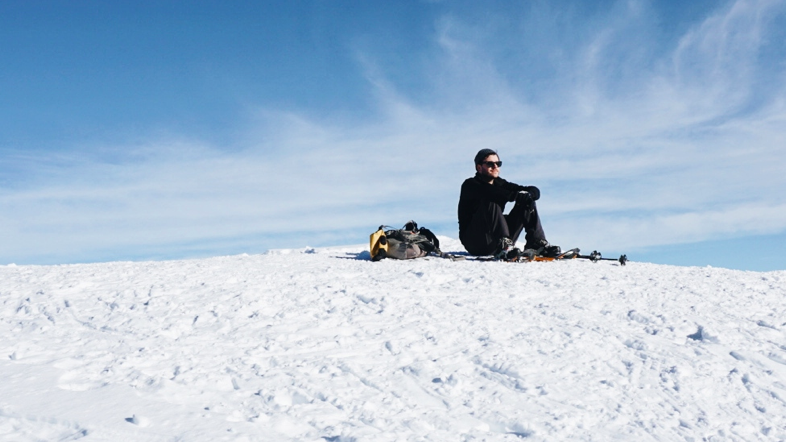

<div class="pageWrapper about">
  <div class="pageContainer">


    {% include nav.html %}

    <div class="aboutContainer">
      <div class="aboutGrid">
        <div class="quoteWrapper">
          <p class="quote">
            “I learned that the soul of a trail is not bound up in dirt and rocks; it is immaterial, evanescent, as fluid as air. The essence lies in its function: how it continuously evolves to serve the needs of its user”</p>
          <p class="author"> – Robert Moor, On Trails</p>
        </div>

        </blo>
        <p class="aboutPara">I am an organized thinker with a deep understanding of user interaction design. I have been a client-facing designer for the past four years and have worked on a wide variety of design projects, finding a home in User Experience design. I have worked with clients of all sizes to help bring ideas from conception to implementation. I believe good design should provide the user with an efficient way to reach their destination while allowing them to explore a little along the way.</p>

        <p class="aboutPara">In my down time, I am trying to spend as much time as possible among Washington’s mountains, coasts and forests. When the weather doesn’t cooperate I’m usually at home reading comics, or out at a brewery grabbing a beer.</p>
      </div>
      <div class="imageContainer">
        
        
      </div>
    <div class="imageContainer">
      
    </div>
    </div>


  </div>
</div>
